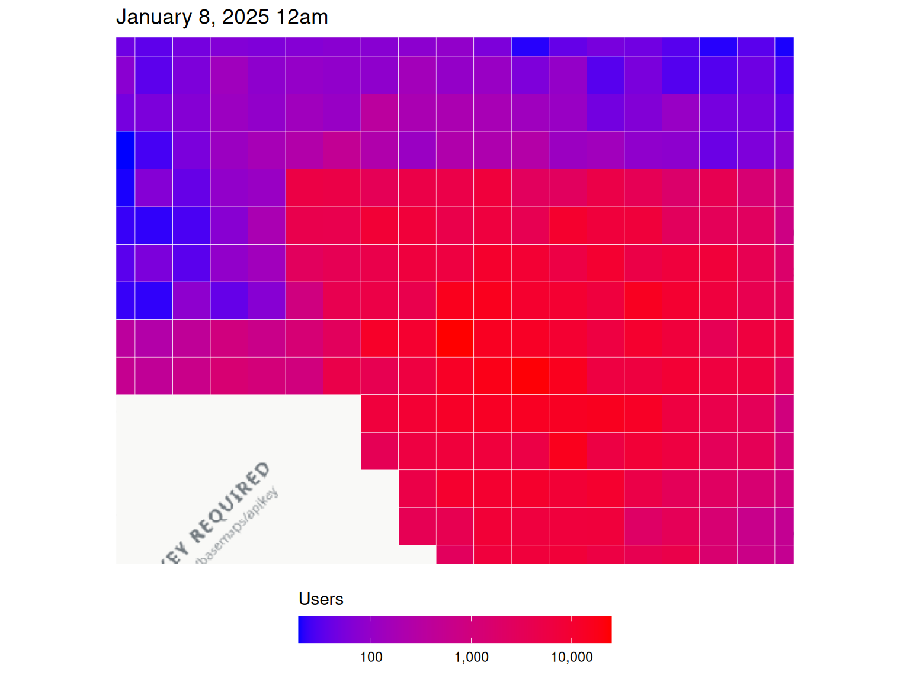
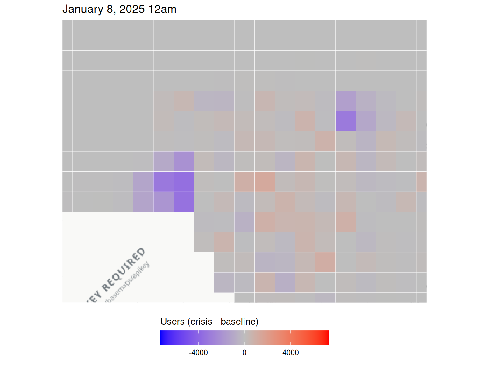
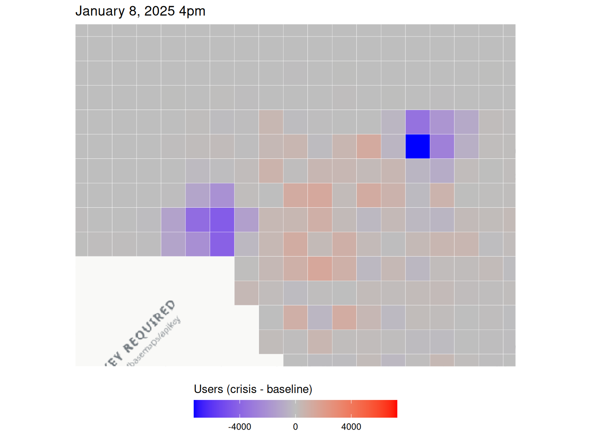
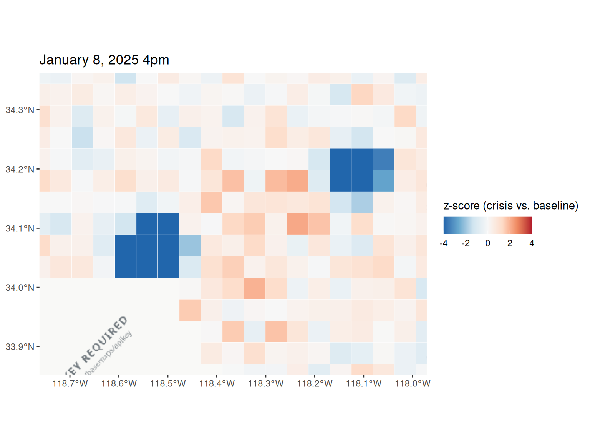
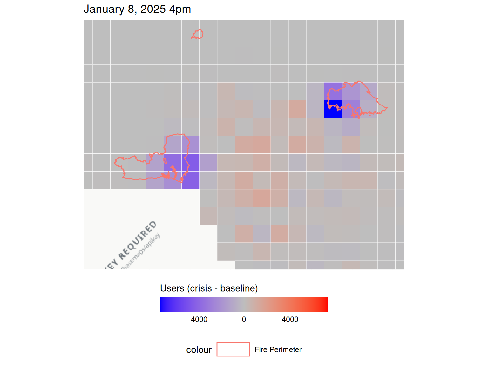
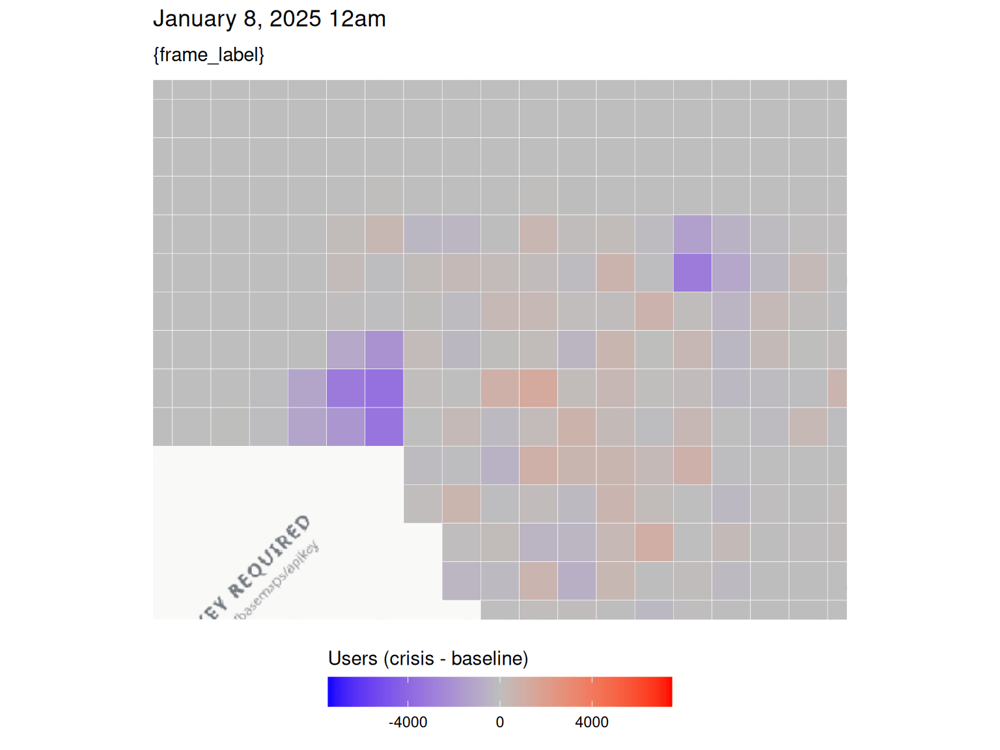

library(disasterMaps)
tzone <- "America/Los_Angeles"Wildfires
Data
data_dir <- system.file("extdata", "fire", "population", package = "disasterMaps")
list.files(data_dir)
#> [1] "la_wildfire_2025-01-08_0000.csv" "la_wildfire_2025-01-08_1600.csv"
fb_data_bing <- aggregate_csvs(data_dir)
head(fb_data_bing)
#> # A tibble: 6 × 15
#> latitude longitude quadkey country date_time n_baseline n_crisis
#> <dbl> <dbl> <chr> <chr> <dttm> <dbl> <dbl>
#> 1 34.4 -119. 0230121332… US 2025-01-08 08:00:00 40 43
#> 2 34.4 -119. 0230121332… US 2025-01-08 08:00:00 34 34
#> 3 34.4 -119. 0230121332… US 2025-01-08 08:00:00 47 48
#> 4 34.4 -119. 0230121332… US 2025-01-08 08:00:00 64 64
#> 5 34.4 -119. 0230121332… US 2025-01-08 08:00:00 58 59
#> 6 34.4 -119. 0230121332… US 2025-01-08 08:00:00 61 66
#> # ℹ 8 more variables: n_difference <dbl>, density_baseline <dbl>,
#> # density_crisis <dbl>, percent_change <dbl>, z_score <dbl>, ds <date>,
#> # source_file <chr>, hour <chr>
analyze_dataset(fb_data_bing)
#> Warning: There was 1 warning in `summarise()`.
#> ℹ In argument: `across(where(is.numeric), list(mean = mean, sd = sd), na.rm =
#> TRUE)`.
#> Caused by warning:
#> ! The `...` argument of `across()` is deprecated as of dplyr 1.1.0.
#> Supply arguments directly to `.fns` through an anonymous function instead.
#>
#> # Previously
#> across(a:b, mean, na.rm = TRUE)
#>
#> # Now
#> across(a:b, \(x) mean(x, na.rm = TRUE))
#> ℹ The deprecated feature was likely used in the disasterMaps package.
#> Please report the issue to the authors.
#> $missing
#> # A tibble: 1 × 15
#> latitude longitude quadkey country date_time n_baseline n_crisis n_difference
#> <dbl> <dbl> <dbl> <dbl> <dbl> <dbl> <dbl> <dbl>
#> 1 0 0 0 0 0 0 0 0
#> # ℹ 7 more variables: density_baseline <dbl>, density_crisis <dbl>,
#> # percent_change <dbl>, z_score <dbl>, ds <dbl>, source_file <dbl>,
#> # hour <dbl>
#>
#> $numeric_summary
#> # A tibble: 1 × 18
#> latitude_mean latitude_sd longitude_mean longitude_sd n_baseline_mean
#> <dbl> <dbl> <dbl> <dbl> <dbl>
#> 1 34.1 0.148 -118. 0.234 3847.
#> # ℹ 13 more variables: n_baseline_sd <dbl>, n_crisis_mean <dbl>,
#> # n_crisis_sd <dbl>, n_difference_mean <dbl>, n_difference_sd <dbl>,
#> # density_baseline_mean <dbl>, density_baseline_sd <dbl>,
#> # density_crisis_mean <dbl>, density_crisis_sd <dbl>,
#> # percent_change_mean <dbl>, percent_change_sd <dbl>, z_score_mean <dbl>,
#> # z_score_sd <dbl>
#>
#> $n_rows
#> [1] 492
#>
#> $n_cols
#> [1] 15Movement data
move_dir <- system.file("extdata", "fire", "movement", package = "disasterMaps")
list.files(move_dir)
#> [1] "la_wildfire_movement_2025-01-08_0000.csv"
#> [2] "la_wildfire_movement_2025-01-08_1600.csv"
mp_data_bing <- aggregate_csvs(move_dir)
head(mp_data_bing)
#> # A tibble: 6 × 17
#> start_latitude start_longitude end_latitude end_longitude length_km
#> <dbl> <dbl> <dbl> <dbl> <dbl>
#> 1 34.4 -119. 34.4 -119. 0
#> 2 34.3 -119. 34.3 -119. 0
#> 3 34.4 -119. 34.4 -119. 0
#> 4 34.4 -119. 34.4 -119. 0
#> 5 34.3 -119. 34.3 -119. 0
#> 6 34.3 -119. 34.3 -119. 0
#> # ℹ 12 more variables: start_quadkey <chr>, end_quadkey <chr>, country <chr>,
#> # date_time <dttm>, n_baseline <dbl>, n_crisis <dbl>, n_difference <dbl>,
#> # percent_change <dbl>, z_score <dbl>, ds <date>, source_file <chr>,
#> # hour <chr>
moved <- build_moved(mp_data_bing, re_run = TRUE, cache_dir = tempdir())Tiles and time windows
tiles_3857 <- build_tiles(fb_data_bing, re_run = TRUE, cache_dir = tempdir())
#> Building tile polygons for 246 distinct quadkeys (492 rows total) -> /tmp/Rtmp9cydTh/tiles.Rds
w <- compute_windows(fb_data_bing, tzone)
w
#> $first_ds
#> [1] "2025-01-08"
#>
#> $first_hour
#> [1] "0000"
#>
#> $latest_ds
#> [1] "2025-01-08"
#>
#> $latest_hour
#> [1] "1600"
#>
#> $first_label
#> [1] "January 8, 2025 12am"
#>
#> $latest_label
#> [1] "January 8, 2025 4pm"
lon_limits <- range(fb_data_bing$longitude)
lat_limits <- range(fb_data_bing$latitude)
zoom <- fit_zoom(lon_limits, lat_limits, zoom = 10)
# One colour scale for both windows
diff_limits <- shared_limits(
"Difference between baseline and crisis", symmetric = TRUE,
ds1 = w$first_ds, hour1 = w$first_hour,
ds2 = w$latest_ds, hour2 = w$latest_hour
)Population during the crisis
population_plot_n_crisis(
plot_ds = w$first_ds, plot_hour = w$first_hour, tzone = tzone,
lon_limits = lon_limits, lat_limits = lat_limits, zoom = zoom
)
Change from baseline
12am
population_plot_n_difference(
plot_ds = w$first_ds, plot_hour = "0000", tzone = tzone,
lon_limits = lon_limits, lat_limits = lat_limits, zoom = zoom,
fill_limits = diff_limits
)
4pm
population_plot_n_difference(
plot_ds = w$first_ds, plot_hour = "1600", tzone = tzone,
lon_limits = lon_limits, lat_limits = lat_limits, zoom = zoom,
fill_limits = diff_limits
)
Z-scores
population_plot(
plot_ds = w$latest_ds, plot_hour = w$latest_hour, tzone = tzone,
metric = "zscore",
lon_limits = lon_limits, lat_limits = lat_limits, zoom = zoom
)
Fire perimeters
population_plot_n_difference(
plot_ds = w$latest_ds, plot_hour = w$latest_hour, tzone = tzone,
lon_limits = lon_limits, lat_limits = lat_limits, zoom = zoom,
fill_limits = diff_limits,
disaster_type = "fire",
start_date = as.Date(w$first_ds) - 1,
end_date = as.Date(w$latest_ds) + 1
)
#> Downloading wildfire perimeters from WFIGS...
#> Dates: 2025-01-07 to 2025-01-09
#> Longitude: -118.762207 to -117.971191
#> Latitude: 33.85217 to 34.361576
#> Downloaded 3 fire perimeter(s).
Animation
animation <- population_plot_animate(
metric = "difference", tzone = tzone,
lon_limits = lon_limits, lat_limits = lat_limits, zoom = zoom,
fill_limits = diff_limits, fps = 1
)
#> `nframes` and `fps` adjusted to match transition
animation